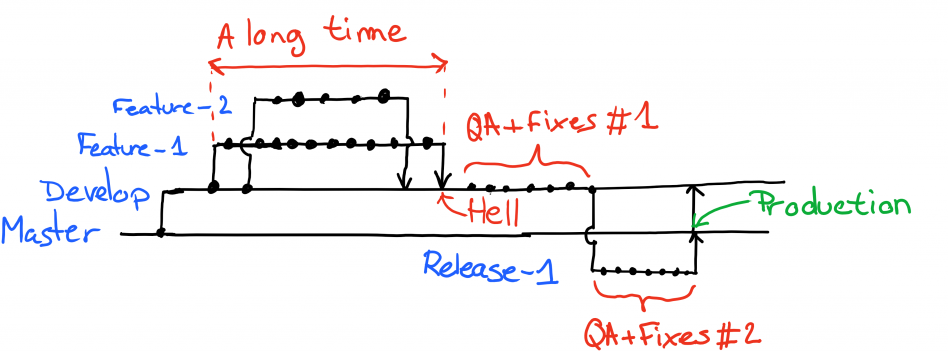
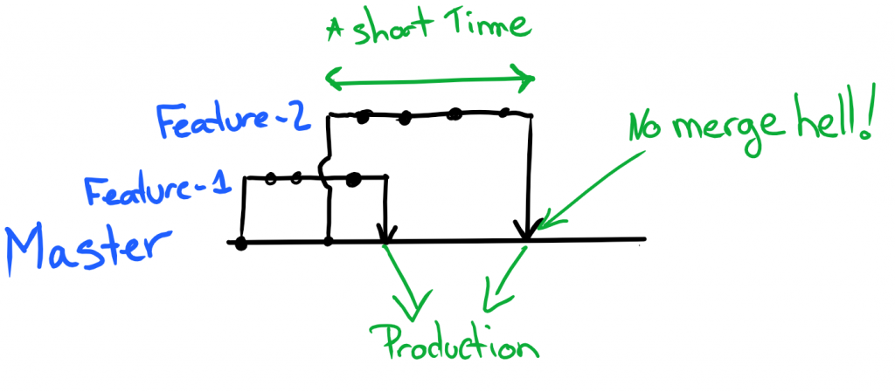
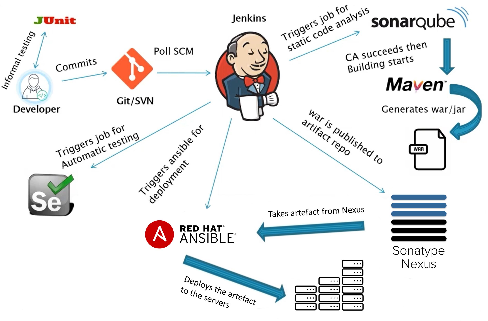

Ma représentation d’un worflow DevOps complet sous forme de schéma, avec la description de ses phases.
Schéma d’un workflow DevOps et de ses phases

Réalisé intégralement avec Inkscape.
Sous licence Creative Commons BY 
|
Continuous "Everything"
Cette section a pour objectif d’expliquer de quoi il est question quand on parle de "Continuous Integration", "Continuous Delivery", "Continuous Deployment" et de CI/CD.
-
Continuous Integration (CI) :
L’Intégration Continue s’aligne avec les phases CODE, BUILD et TEST du précédent schéma.
Cette pratique consiste en l'intégration régulière par les développeurs des modifications de leur code source dans un gestionnaire de code centralisé, et en l’automatisation de la conduite de tests visant à détecter l’introduction de régressions dans le code. -
Continuous Delivery (CD) :
La Livraison Continue complète l’Intégration Continue à laquelle elle ajoute les phases RELEASE et DEPLOY du précédent schéma.
Une précision importante cependant : dans le cas de la Livraison Continue, le déploiement, associé à la phase DEPLOY, est le résultat d’une action manuelle et NON d’une exécution automatique.
En plus des objectifs de la CI, la Livraison Continue rajoute les objectifs suivants :-
L’automatisation de la création des livrables de l’application
-
L’automatisation du déploiement et de la configuration de ces livrables dans les différents environnements de qualification (par exemple environnements d’intégration, de recette, de pre-prod) à l’exception de la production qui nécessite une approbation manuelle
-
L’automatisation de la conduite de tests dans les différents environnements où les livrables ont été déployés.
Les livrables ne pouvant être "promus" dans un environnement supérieur qu’à partir du moment où ils ont validé les tests de l’environnement présent.
Exemple : les livrables doivent valider les tests spécifiques à l’environnement d’intégration avant d’être promus (déployés) en environnement de recette.
-
-
Continuous Deployment (de nouveau "CD", comme pour le Continous Delivery) :
Déploiement Continu et Livraison Continue sont similaires à la seule différence que la Livraison Continue nécessite une action manuelle pour le déploiement des livrables en environnement de production (ce qui correspond à la véritable "MEP / Mise En Production" de l’application), alors que le Déploiement Continu réalise la mise en production automatiquement.

-
CI/CD :
L’expression "CI/CD" désigne simplement la combinaison de 2 ou 3 des pratiques précédentes :-
Continuous Integration (CI) et Continuous Delivery (CD)
-
Continuous Integration (CI) et Continuous Delivery (CD) et Continous Deployment (CD)
On parlera souvent de "chaîne de CI/CD" pour désigner l’ensemble d’outils et le workflow d’étapes permettant d’implémenter les pratiques de CI et CD.
-
-
DevOps :
Le DevOps, contraction de Dev pour Development (Développement) et Ops pour Operations (Exploitation), désigne à la fois un ensemble de pratiques (auxquelles appartiennent celles précédemment décrites) et d’outils et une philosophie / culture de travail.
Son but est d’améliorer la capacité d’une entreprise à livrer rapidement des applications et services, de garantir leur qualité, de faciliter leur évolution afin au final de gagner en compétitivité.
On pourra parler aussi bien de "pratiques DevOps" que de "mouvement DevOps", d'"approche DevOps", ou encore de "cycle (de vie) DevOps" ou autre "pipeline" et "workflow" DevOps.
Description des phases
PLAN
La phase de planification / conception concerne tout ce qui a lieu AVANT que l’équipe de développement ne débute l’écriture du code.
C’est le moment où l’on va construire la roadmap produit afin de guider les développements à venir.
Cette roadmap est généralement enregistrée et suivie à l’aide d’un outil de gestion de projet comme Jira, Trello, Azure DevOps (fonctionnalité "Boards"), etc.
CODE
C’est durant cette phase que l’équipe de développement implémente les stories de la roadmap produit, et donc "écrit le code".
Pour ce faire, les développeurs utilisent un ensemble d'outils (IDE et leurs plugins, outil de modélisation, utilitaires divers, etc.), langages de développement (Java, Python, etc.), frameworks (Spring, Hibernate, etc.), librairies (Guava, Apache Commons, etc.) et spécifications (JAX-RS, CDI, JSON-P, etc.), pour certains définis au niveau de l’organisation, pour d’autres spécifiques au projet.
Une fois écrit, le code doit être sauvegardé et partagé dans l’équipe à l’aide de solutions d’hébergement de code (Source Code Repository Manager) s’appuyant sur un logiciel de SCM (Source Code Management).
Git est actuellement le SCM le plus utilisé au monde, et parmi les repo manager populaires s’appuyant dessus nous trouvons aujourd’hui GitHub, GitLab, Bitbucket pour ne citer qu’eux.
Stratégie de branching Git
2 types de stratégies de gestion de branches ("branching strategies") sont globalement utilisées aujourd’hui (2022) sur le marché :
-
Les workflows dits de "feature branching" auxquels appartiennent Git Flow, GitHub flow et GitLab flow.
 -
Les workflow dits "trunk-based" (on parlera de "trunk-based development")

Source des 2 précédents schémas : https://learn.microsoft.com/fr-fr/archive/blogs/technet/devops/a-git-workflow-for-continuous-delivery
|
Depuis quelques années maintenant, le trunk-based development est redevenu la stratégie de branching la plus utilisée, devant le feature branching qui avait pris le lead lors de l’adoption massive des outils de type DVCS (basés sur Git). |
BUILD
La phase de BUILD est celle où le code source va être récupéré (du précédent repo manager) puis buildé afin de pouvoir être testé.
Le résultat du build, souvent appelé "archive" (JAR pour Java ARchive, WAR pour Web ARchive, etc.), a pour vocation d’être ensuite déployé, testé et validé dans les différents environnements du projet (par exemple DEVELOPPEMENT, INTEGRATION, RECETTE, PRE-PRODUCTION et finalement PRODUCTION).
|
Il est à noter que l’on devrait toujours ne builder qu’une unique fois une archive, puis déployer et tester progressivement cette même archive dans les différents environnements et NON builder une archive spécifique par environnement. |
La création de l’archive à partir du code source est réalisée à l’aide d’un outil de build.
Parmi les plus connus on retrouve Maven, Gradle, Ant, NPM, etc.
Le déclenchement du build est généralement réalisé par un outil d’automatisation, de type serveur d’intégration continue.
L’élément déclencheur du build ("trigger") est soit une action manuelle, soit la détection en temps presque réel d’une modification du code dans le repo manager (présence d’un nouveau commit modifiant le code).
Les serveurs d’intégration délègue ensuite la création de l’archive aux outils de build vus précédemment.
Parmi les serveurs d’intégration continue les plus connus on retrouve Jenkins, Travis CI, GitLab CI, Azure DevOps, etc.

TEST
Une fois buildés, les archives sont déployés dans un environnement de qualification où plusieurs séries de tests, manuels (UAT ou tests de recette) et / ou automatiques (tests d’intégration, d’API, de sécurité, etc.) sont déroulés.
Les archives peuvent également être déployées dans plusieurs environnements de qualification, chacun étant l’objet de tests de natures différentes.
RELEASE
La phase de release est celle où le livrable de production (certains outils parleront de "package" ou "deployment package") va être créé en combinant les archives précédemment buildées et testées avec les différents paramètres permettant de les dédier à l’environnement ciblé (package = archives + fichiers de paramétrage).
Le livrable de production / package ainsi créé sera ensuite stocké dans un référentiel spécifique. Suivant la nature du livrable, ce référentiel pourra être soit un repository manager (Nexus et Artifactory sont les plus utilisés), ou un outil dédié (Digital.ai Deploy (anciennement XL Deploy) )
DEPLOY
La phase de DEPLOY correspond au déploiement, à l’installation du livrable de production de la phase RELEASE en environnement de PROD.
Ce déploiement peut être soit manuel dans le cadre d’une approche Continuous Delivery, soit automatique dans le cadre du Continuous Deployment.
Les principaux outils permettant de configurer un environnement à partir des éléments contenus dans le livrable de production sont appelés outils d’automatisation et de gestion de configuration, parmi lesquels on peut citer Ansible, XL Deploy (Digital.ai Deploy), Terraform.
Ces outils permettent d’automatiser totalement la procédure de déploiement qui est décrite sous forme de fichier (descripteur de déploiement), on parlera d'Infrastructure-as-Code (IaC)
Et, plutôt que de déployer un livrable sur un serveur physique, les solutions de virtualisation et conteneurisation sont plébiscitées.
Ces dernières, conjuguées à l’Infrastructure-as-Code, permettent une meilleure agilité et scalabilité (capacité à détruire, recréer et ajouter au besoin un ou plusieurs runtime / environnements), des caractéristiques très demandées pour les architectures Cloud et microservices qui multiplient le nombre de serveurs et services.
Parmi les solutions de virtualisation et de conteneurisation les plus connues : toutes les stacks Cloud actuelles, Docker, Podman, Kubernetes, OpenShift, etc.
OPERATE
A ce stade, l’application est déployée en PROD et est en cours de fonctionnement.
La phase OPERATE regroupe toutes les opérations visant à assurer le bon fonctionnement de l’application.
On y retrouve :
-
La mise en place de moyens de détection de tout comportement anormal de l’application (monitoring), devant donner lieu à la génération d’une alerte (alerting).
Ces alertes seront stockées dans un outil de gestion de tickets (Issue Tracking System, ITS).
Exemples de comportement anormal de l’application : rupture de SLA, serveur down, absence de réponse d’un service, etc. -
Toutes les interventions de support, manuelle ou automatique (script ou autre outil) ayant pour but de corriger un problème afin de revenir à un comportement normal de l’application.
Parmi les solutions ITS les plus connues : JIRA, ServiceNow, Mantis
|
Différences entre monitoring et alerting
Le monitoring est le processus par lequel on maintient la surveillance sur l’état d’un système. Le monitoring peut être soit :
→ L'alerting correspond donc à la capacité d’un système de monitoring de détecter un changement d’état donné et d’en notifier l’équipe d’exploitation. |
Les systèmes de monitoring sont souvent regroupés en sous-catégories suivant leur spécialité. Voici quelques exemples :
-
les APM (Application Performance Management) : Dynatrace et Datadog
-
logiciel de supervision : Centreon, Sentry, Nagios
-
Prometheus pour le monitoring de Kubernetes
-
La stack ELK (collecte de données avec Logstash, requêtage avec Elasticsearch et dashboarding avec Kibana)
-
OpenTelemetry devient de plus en plus la norme pour l'envoi et la collecte de données de télémétrie
FEEDBACK & MONITORING
L’idée de cette phase de "feedback & monitoring" est que l’analyse des données de télémétrie doit permettre de mieux comprendre l’application afin d’être capable d'anticiper, de prédire son comportement futur, afin de prévenir d’éventuels problèmes d’arriver.
Les outils utilisés sont les mêmes systèmes de monitoring que pour la phase Operate, mais plutôt qu’être utilisés pour de l’alerting (c’est-à-dire notifier d’un problème / incident via l’envoi d’une alerte), ils vont servir à observer l’évolution de l’état de l’application afin de nous donner la capacité d’entreprendre des actions visant à prévenir tout futur problème.
Ces actions seront donc réalisées AVANT qu’un problème, et donc une alerte, ne soit remonté.
Cette observation de l’évolution de l’état de l’application devant être réalisée sur un période de temps et non un instant "t", elle implique souvent l’utilisation de timeseries (séries temporelles).
Le feedback implique également l’observation de l’efficacité des actions correctives déjà menées : ces dernières ont-elles été efficaces ? Pérennes ? Workaround avant une solution durable ?